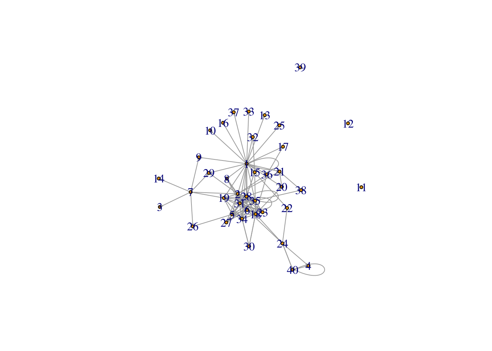

homework10
Valentina Cafarelli
5/4/2021
Homework 10
| 1) Prepare the data for the network analysis (create a separate edge and node list) |
| Creating the Node List containing the IDs and the extroversion variables |
r dataset_hw10 %>% select(c(`Q2`, `Q4`)) -> nodelist_hw |
r nodelist_hw <- nodelist_hw[-(1), ] |
r nodelist_hw <- nodelist_hw %>% rename("ID" = "Q2") |
r nodelist_hw <- nodelist_hw %>% rename("extroversion" = "Q4") |
r nodelist_hw$`ID` <- as.numeric(nodelist_hw$`ID`) nodelist_hw$`extroversion` <- as.numeric(nodelist_hw$`extroversion`) |
r nodelist_hw <- nodelist_hw %>% arrange(`ID`) |
| Dealing with the missing people and setting up a new, adjusted dataset to ensure the command network() can run |
r ID <- c(1:40) extended <- data.frame(ID) |
r full_join(extended, nodelist_hw, by="ID") -> nodelist_extended |
| Creating the Edge List |
r edgelist_hw <- dataset_hw10 %>% select(`Q2`:`Q3_40`) |
r edgelist_hw <- edgelist_hw[-(1), ] |
r edgelist_hw <- edgelist_hw %>% rename(c("Out-tie" = "Q2", "1" = "Q3_1", "2" = "Q3_2", "3" = "Q3_3", "4" = "Q3_4", "5" = "Q3_5", "6" = "Q3_6", "7" = "Q3_7", "8" = "Q3_8", "9" = "Q3_9", "10" = "Q3_10", "11" = "Q3_11", "12" = "Q3_12", "13" = "Q3_13", "14" = "Q3_14", "15" = "Q3_15", "16" = "Q3_16", "17" = "Q3_17", "18" = "Q3_18", "19" = "Q3_19", "20" = "Q3_20", "21" = "Q3_21", "22" = "Q3_22", "23" = "Q3_23", "24" = "Q3_24", "25" = "Q3_25", "26" = "Q3_26", "27" = "Q3_27", "28" = "Q3_28", "29" = "Q3_29", "30" = "Q3_30", "31" = "Q3_31", "32" = "Q3_32", "33" = "Q3_33", "34" = "Q3_34", "35" = "Q3_35", "36" = "Q3_36", "37" = "Q3_37", "38" = "Q3_38", "39" = "Q3_39", "40" = "Q3_40")) |
r edgelist_pivot <- edgelist_hw %>% pivot_longer(cols = "1":"40", names_to = "In-tie", values_to = "Tie type") %>% drop_na() |
r edgelist_pivot <- edgelist_pivot %>% separate("Tie type", into = c("1", "2", "3", "4", "5"), sep = ",") %>% pivot_longer("1":"5", names_to = "Number", values_to = "Tie type", values_drop_na = TRUE) %>% select(c("Out-tie", "In-tie", "Tie type")) |
## Warning: Expected 5 pieces. Missing pieces filled with `NA` in 220 rows [1, 2, 3, 5, 6, 7, 9, 10, 11, 12, 14, 15, 16, 19, ## 21, 22, 23, 24, 25, 28, ...]. |
r edgelist_pivot$`Out-tie` <- as.numeric(edgelist_pivot$`Out-tie`) edgelist_pivot$`In-tie` <- as.numeric(edgelist_pivot$`In-tie`) edgelist_pivot$`Tie type` <- as.numeric(edgelist_pivot$`Tie type`) |
r edgelist_pivot <- edgelist_pivot %>% arrange(`Out-tie`) |
2) Calculate measures of centrality and similarity in networks depending on the type of tie! Which tie type generates the most similar network in terms of introversion? Which tie type is the most dissimilar?
From Figure 1, we can see that most people are connected to each other. Compared to the dataset used in the lecture, there are not people in this class who are not connected to anyone else.
Tie Type 1 In Figure 3, we look at tie type 1 specifically. Tie type 1 corresponds to “I have texted this person in the last seven days.” The central cluster represents the MBDS 516 class as the entire class is part of a Slack group. In addition, the class is currently involved in a group project, meaning that team members are likely communicating on at least a weekly basis. Nodes such as 37, 17, and 39 are likely the additional datapoints added for complexity. Because of the nature of the course, it is unlikely that any students have absolutely no text communication with the wider array of peers in the course.
The centralization is low-to-moderate (0.1615). This makes sense as there is not a central group of actors to which all members of the class defer and work with. Classmates either work individually or in their groups, the greatest amount of test communication occurs directly in these groups as not all classmates are active in the Slack channel.
This shows that the class is not effectively sectioned based on level of introversion. This makes sense as much of the class characterizes itself as “middle ground” and those who characterize themselves as introverted or extroverted are not seen as outcasts. Most of the communication in the class occurs in work groups or to the entire class, no communications are intentionally made as a result of a person’s level of extroversion. This may not be the case in a network which is more social and less academic, but in the case of this network communication happens largely in order to complete assignments.
Tie Type 2 In Figure 4, we look at tie type 2. Tie type 2 corresponds to “I have met during my time in MBDS.” Meeting people is particularly interesting because most “face to face” interaction in this course has been via Zoom. Even if group members live in close proximity to one another (in Philadelphia together), they may still choose to meet via Zoom because it is convenient and as a COVID precaution. With that said, people who knew each other before the course began may see each other through other channels or meet socially. A subset of students taking the course is in the MBDS major, while a smaller subset is in other majors (e.g. IPD).
Centralization is higher here (0.1942) because there are many people who “met” node one during the class. This may be a result of the few people that were in the dataset but not necessarily in the class. In addition, it is possible that people misunderstood the question and took “met” to mean made an acquaintance, not met in person.
Assortativity is low in this case because the question is somewhat ambiguous and because factors such as COVID were more significant than the relative extroversion of each class member.
Tie Type 3 Tie three is “is my friend”. This plot (Figure 5) makes sense as no class member is friends with the few extra people added to the dataset, who are all on the periphery. Additionally, irregularity within the primary cluster results from people having differing definitions of “friend”. However, since most class members are “middle-ground” extroverted, nearly all will characterize at least one member of the class as a friend, likely someone who they met before taking the course.
Centralization is low (0.1442) because in such a group of people, it is not often that there is one person who is friends with most if not all members of the group. Especially under COVID circumstances, it is difficult to build friendships with people in a class, especially if not all classmates work together consistently.
Assortativty is low because when making friends, people consider much more than a person’s degree of extroversion. Introverts are friends with extroverts, and viceversa. Other qualities such as shared interests and genuine empathy are more critical.
Tie Type 4 Tie type four is “I ask for advice/help”. The tight nature of this network (Figure 6) can be attributed to the Slack page, where classmates ask the entire class for advice and help with homework assignments. Some ask a lot and some do not, and some ask a lot but do not admit as much. This is why the network is not even tighter. The datapoints on the periphery could be the added people.
Centralization is mildly higher (0.2955) for this network because in any given class, there will always be students who are particularly knowledgeable in the course material. Many students in the class will turn to these particular students for support.
Assortativity is still low because people do not decide who they will ask for help based on how social the helper is. Their considerations are of if the person will be able to support their efforts.
Tie Type 5 Tie type five is “ask me for help/advice”. This network (Figure 7) resembles the network for tie type four except that it is less tight. This makes sense as people do not always feel compelled to take credit for helping others and see it as just acting in a good-natured way. In any case, it shows that all class members are asked for help. This makes sense as a good amount of the classwork has been collaborative.
Centralization is unlikely to be an informative statistic in this tie type because the question is directed from the class to each individual, not from each individual to the class as a whole. In this way, it is the inverse of tie type 4. Not many will admit to being asked for help by everyone, even if this is the case.
Similarly, assortativity is not a useful statistic in this tie type.
Below, we report all figures and metrics of Centralization, Assortativity for each Tie Type.
Figure 1: Plotting the network for all the possible tie types
Figure 2: Plotting the network for all the possible tie types with the package igraph
Figure 3: Analysis for tie type 1 
Centrality for tie type 1
## 1 2 3 4 5 6 7 8 9 10 11 12 13 14 15 16 17 18 19 20 21 22 23 24 25 26 27 28 29 30 31 32 33 34 35 36 37 38 39 40
## 3 6 3 2 8 7 0 3 5 0 4 6 4 1 4 2 0 10 6 4 1 8 1 2 1 1 3 10 7 4 6 2 3 5 5 4 1 2 1 3## $res
## [1] 3 6 3 2 8 7 0 3 5 0 4 6 4 1 4 2 0 10 6 4 1 8 1 2 1 1 3 10 7 4 6 2 3 5 5 4 1 2 1 3
##
## $centralization
## [1] 0.1615385
##
## $theoretical_max
## [1] 1560Assortativity: Measuring how similar people are in terms of introversion for Tie Type 1
## [1] 0.1228057## [1] 0.1348994Figure 4: Analysis for tie type 2

Calculating centrality for tie type 2
## 1 2 3 4 5 6 7 8 9 10 11 12 13 14 15 16 17 18 19 20 21 22 23 24 25 26 27 28 29 30 31 32 33 34 35 36 37 38 39 40
## 2 10 1 2 7 10 0 4 2 1 0 0 1 1 2 1 1 11 9 2 4 2 4 1 1 2 6 11 3 2 9 2 1 7 7 4 1 1 0 2## $res
## [1] 2 10 1 2 7 10 0 4 2 1 0 0 1 1 2 1 1 11 9 2 4 2 4 1 1 2 6 11 3 2 9 2 1 7 7 4 1 1 0 2
##
## $centralization
## [1] 0.1942308
##
## $theoretical_max
## [1] 1560Assortativity: Measuring how similar people are in terms of introversion for Tie Type 2
## [1] -0.2405615## [1] -0.0183015Figure 5: Analysis for tie type 3
Calculating centrality for tie type 3
## 1 2 3 4 5 6 7 8 9 10 11 12 13 14 15 16 17 18 19 20 21 22 23 24 25 26 27 28 29 30 31 32 33 34 35 36 37 38 39 40
## 2 9 0 2 8 8 0 2 0 0 0 6 2 1 4 1 0 9 4 6 2 7 3 1 0 0 4 7 8 4 8 4 3 6 4 6 0 2 0 2## $res
## [1] 2 9 0 2 8 8 0 2 0 0 0 6 2 1 4 1 0 9 4 6 2 7 3 1 0 0 4 7 8 4 8 4 3 6 4 6 0 2 0 2
##
## $centralization
## [1] 0.1442308
##
## $theoretical_max
## [1] 1560Assortativity: Measuring how similar people are in terms of introversion for Tie Type 3
## [1] 0.02809497## [1] -0.02886641Figure 6: Analysis for tie type 4
Calculating centrality for tie type 4
## 1 2 3 4 5 6 7 8 9 10 11 12 13 14 15 16 17 18 19 20 21 22 23 24 25 26 27 28 29 30 31 32 33 34 35 36 37 38 39 40
## 1 9 1 2 8 8 1 15 3 9 1 4 3 1 2 0 0 9 5 6 12 6 1 1 1 2 2 11 16 4 7 3 3 5 4 8 0 2 0 3## $res
## [1] 1 9 1 2 8 8 1 15 3 9 1 4 3 1 2 0 0 9 5 6 12 6 1 1 1 2 2 11 16 4 7 3 3 5 4 8 0 2 0 3
##
## $centralization
## [1] 0.2955128
##
## $theoretical_max
## [1] 1560Assortativity: Measuring how similar people are in terms of introversion for Tie Type 4
## [1] -0.1294851## [1] 0.01731216Figure 7: Analysis for tie type 5
Calculating centrality for tie type 5
## 1 2 3 4 5 6 7 8 9 10 11 12 13 14 15 16 17 18 19 20 21 22 23 24 25 26 27 28 29 30 31 32 33 34 35 36 37 38 39 40
## 4 2 1 2 7 8 0 0 4 0 1 2 2 1 1 0 0 8 4 5 1 7 1 2 0 3 1 9 3 4 6 2 3 5 5 5 0 2 0 3## $res
## [1] 4 2 1 2 7 8 0 0 4 0 1 2 2 1 1 0 0 8 4 5 1 7 1 2 0 3 1 9 3 4 6 2 3 5 5 5 0 2 0 3
##
## $centralization
## [1] 0.1576923
##
## $theoretical_max
## [1] 1560Assortativity: Measuring how similar people are in terms of introversion for Tie Type 5
## [1] -0.06440357## [1] 0.060631953) Do introverts tend to be at the periphery while extroverts are in the center of the network?
In order to understand whether extroversion affects network measures, we run three separate regression with ‘degree’, ‘betweenness’, and ‘closeness’ as the dependent variables respectively, and extroversion as the independent variable. Based on the regression results, we do not that extroversion significantly affect any of these measures. However, if we look at Figure 7, 8, and 9 below, it looks like extroverts tend to be in the middle of the network. Additionally, from the figures, it is easy to see that only 3 people in the class consider themselves as purely extroverted, making it hard to base a prediction on such a small sample size. It would be interesting to remove the middle option next time the survey is admistered to see if the results change.
Calculating the variables ‘degree’, ‘betweenness’, and ‘closeness’ for each person in the class
## ID extroversion degree betweenness closeness
## 1 1 2 12 84.3266548 0.018181818
## 2 2 3 36 28.5421906 0.016129032
## 3 3 NA 6 0.0000000 0.011494253
## 4 4 NA 10 0.0000000 0.008620690
## 5 5 2 38 13.1250010 0.013698630
## 6 6 2 41 91.4043960 0.016666667
## 7 7 1 1 22.3636950 0.012987013
## 8 8 NA 24 0.0000000 0.015151515
## 9 9 NA 14 0.0000000 0.013513514
## 10 10 NA 10 0.0000000 0.013698630
## 11 11 NA 6 0.0000000 0.011363636
## 12 12 NA 18 0.0000000 0.012658228
## 13 13 NA 12 0.0000000 0.012345679
## 14 14 NA 5 0.0000000 0.008695652
## 15 15 2 13 16.0518916 0.014285714
## 16 16 NA 4 0.0000000 0.012195122
## 17 17 2 1 20.0000000 0.011764706
## 18 18 1 47 67.9729521 0.015384615
## 19 19 NA 28 0.0000000 0.014492754
## 20 20 2 23 55.1964592 0.016393443
## 21 21 NA 20 0.0000000 0.014705882
## 22 22 NA 30 0.0000000 0.014285714
## 23 23 2 10 11.2174072 0.015151515
## 24 24 2 7 18.5381747 0.012500000
## 25 25 NA 3 0.0000000 0.010752688
## 26 26 NA 8 0.0000000 0.011494253
## 27 27 NA 16 0.0000000 0.012820513
## 28 28 2 48 196.1343076 0.018867925
## 29 29 NA 37 0.0000000 0.015873016
## 30 30 2 18 1.2811184 0.012987013
## 31 31 3 36 23.3608189 0.015625000
## 32 32 2 13 4.3415712 0.013698630
## 33 33 2 13 0.2279942 0.012500000
## 34 34 1 28 28.1551774 0.015384615
## 35 35 3 25 22.8384099 0.016129032
## 36 36 2 27 48.1209016 0.015384615
## 37 37 NA 2 0.0000000 0.010989011
## 38 38 2 9 6.1281513 0.014492754
## 39 39 NA 1 0.0000000 0.008130081
## 40 40 2 13 12.6727273 0.010989011Predicting the variables ‘degree’, ‘betweenness’, and ‘closeness’ as a function of extroversion
##
## Call:
## lm(formula = extroversion ~ degree + betweenness + closeness,
## data = nodelist_q_3)
##
## Residuals:
## Min 1Q Median 3Q Max
## -1.17894 -0.10653 -0.02896 0.35700 0.71366
##
## Coefficients:
## Estimate Std. Error t value Pr(>|t|)
## (Intercept) 0.149555 1.234266 0.121 0.905
## degree 0.005428 0.010850 0.500 0.623
## betweenness -0.006618 0.004168 -1.588 0.131
## closeness 134.143562 93.921658 1.428 0.171
##
## Residual standard error: 0.5446 on 17 degrees of freedom
## (19 observations deleted due to missingness)
## Multiple R-squared: 0.1595, Adjusted R-squared: 0.0112
## F-statistic: 1.076 on 3 and 17 DF, p-value: 0.3858##
## Call:
## lm(formula = closeness ~ extroversion, data = nodelist_q_3)
##
## Residuals:
## Min 1Q Median 3Q Max
## -0.0037349 -0.0010491 0.0002133 0.0013485 0.0041440
##
## Coefficients:
## Estimate Std. Error t value Pr(>|t|)
## (Intercept) 0.0133483 0.0017351 7.693 2.98e-07 ***
## extroversion 0.0006878 0.0008382 0.821 0.422
## ---
## Signif. codes: 0 '***' 0.001 '**' 0.01 '*' 0.05 '.' 0.1 ' ' 1
##
## Residual standard error: 0.002053 on 19 degrees of freedom
## (19 observations deleted due to missingness)
## Multiple R-squared: 0.03423, Adjusted R-squared: -0.0166
## F-statistic: 0.6734 on 1 and 19 DF, p-value: 0.422##
## Call:
## lm(formula = betweenness ~ extroversion, data = nodelist_q_3)
##
## Residuals:
## Min 1Q Median 3Q Max
## -36.53 -24.09 -16.76 11.36 159.37
##
## Coefficients:
## Estimate Std. Error t value Pr(>|t|)
## (Intercept) 51.345 38.735 1.326 0.201
## extroversion -7.292 18.711 -0.390 0.701
##
## Residual standard error: 45.83 on 19 degrees of freedom
## (19 observations deleted due to missingness)
## Multiple R-squared: 0.00793, Adjusted R-squared: -0.04428
## F-statistic: 0.1519 on 1 and 19 DF, p-value: 0.7011##
## Call:
## lm(formula = degree ~ extroversion, data = nodelist_q_3)
##
## Residuals:
## Min 1Q Median 3Q Max
## -20.857 -9.857 -3.857 10.643 28.643
##
## Coefficients:
## Estimate Std. Error t value Pr(>|t|)
## (Intercept) 14.857 12.516 1.187 0.250
## extroversion 3.500 6.046 0.579 0.569
##
## Residual standard error: 14.81 on 19 degrees of freedom
## (19 observations deleted due to missingness)
## Multiple R-squared: 0.01733, Adjusted R-squared: -0.03439
## F-statistic: 0.3351 on 1 and 19 DF, p-value: 0.5695Figure 7: Visualizing relationship between closeness and levels of extroversion
Figure 8: Visualizing relationship between degree and levels of extroversion
Figure 9: Visualizing relationship between betweeness and levels of extroversion
Acknowledgments
This work has been done as part of a class project and it’s the result of teamwork by Nicolle Belaunde, Valentina Cafarelli, Jenifer M. Nemoda, Samira Okudo, and Jonathan Zur.
Specifically:
Nicolle Belaunde - Provided general feedback on analysis and interpretation
Valentina Cafarelli - Worked on interpreting the analysis; Worked on final formatting; Provided feedback on analysis
Jenifer M. Nemoda - Worked on polishing the data and coding the analysis; Worked on interpreting the analysis
Samira Okudo - Provided general feedback on analysis and interpretation
Jonathan Zur - Worked on interpreting the analysis; Provided feedback on analysis